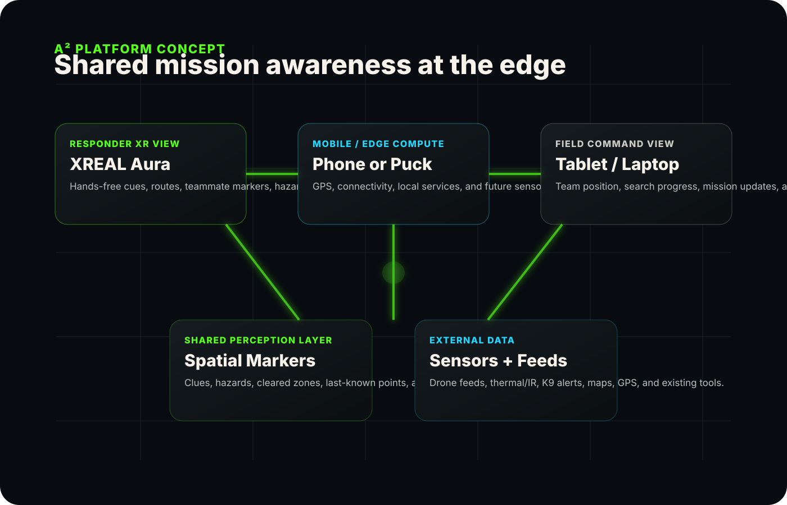
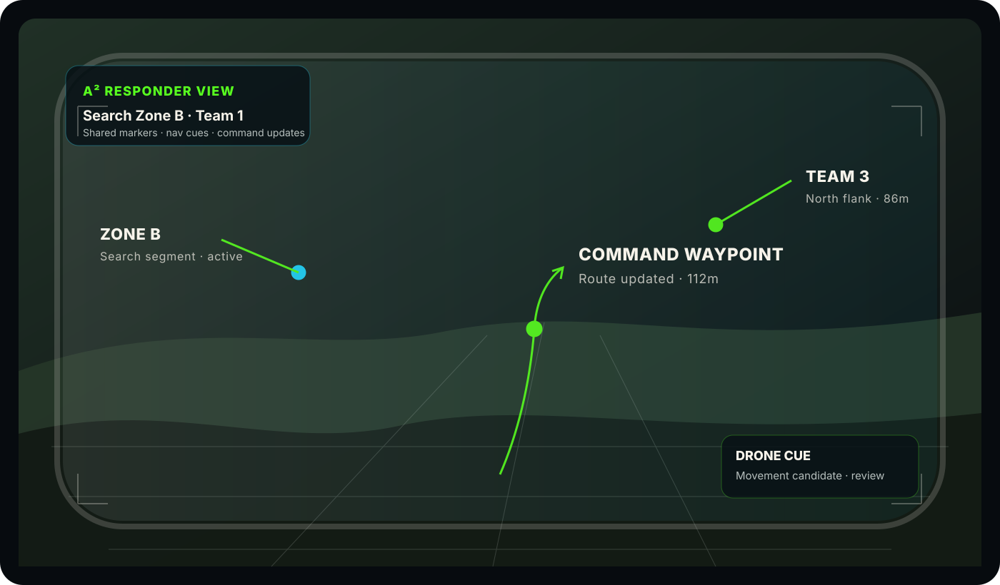
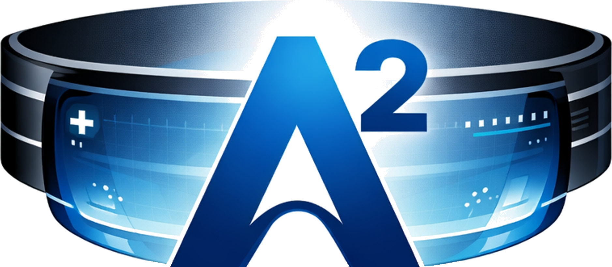

01
Responder XR View
A wearable display layer for route cues, teammate markers, hazards, search zones, command updates, and spatial annotations.
Platform concept
A² is developing a platform concept that connects responder-worn XR, mobile compute, field command, shared spatial markers, and future sensor feeds into one mission-aware workflow.
System view
The design direction prioritizes commercially available XR hardware, mobile edge compute, and a command-connected mission layer. XREAL Aura is the current platform direction for the responder view because it aligns with a glasses-based, outdoor-oriented workflow.

Core components
A² should not be framed as only an XR app. The platform vision is an integrated responder and command system that can mature through prototypes, feedback, and future pilots.
A wearable display layer for route cues, teammate markers, hazards, search zones, command updates, and spatial annotations.
A mission data layer for placing, receiving, and synchronizing markers tied to field locations and responder observations.
A tablet or laptop interface for team status, search progress, field updates, and command-directed waypoints.
A future path for integrating drones, GPS, thermal/IR, canine-mounted sensors, maps, and existing public-safety tools.
Capability model
Display the most useful mission context at the edge: routes, waypoints, zones, teammates, hazards, and command updates.
Create spatial mission markers for clues, last-known points, victim locations, obstacles, hazards, cleared areas, and priority zones.
Synchronize field observations across responders and command so teams can act from a common mission context.
Help command direct team movement and update priorities without relying only on repeated radio traffic.
Capture mission events, markers, and movement history for future debrief, training, analysis, and platform improvement.
Responder view
The platform should keep displays lightweight, glanceable, and mission-driven. The responder should not need to manage a complex interface while searching, moving, treating, or coordinating.

Current posture
This site presents the platform vision, not a mature deployed product. The purpose is to communicate the direction clearly and invite informed conversations with responders, advisors, researchers, and technical partners.
Clarify mission workflows, prototype core views, and define the minimum useful shared-perception loop.
Develop demonstrations around SAR, police, EMS, and field command scenarios using commercially available XR hardware.
Work with field partners toward structured evaluations when the platform reaches pilot readiness.
Technical collaboration
We welcome discussions with responders, agencies, researchers, and technology partners who can help shape a useful public-safety XR platform.
Connect With Us